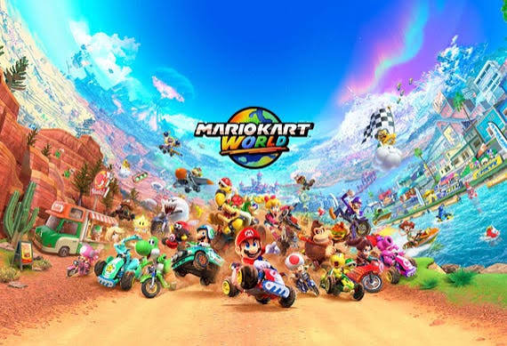
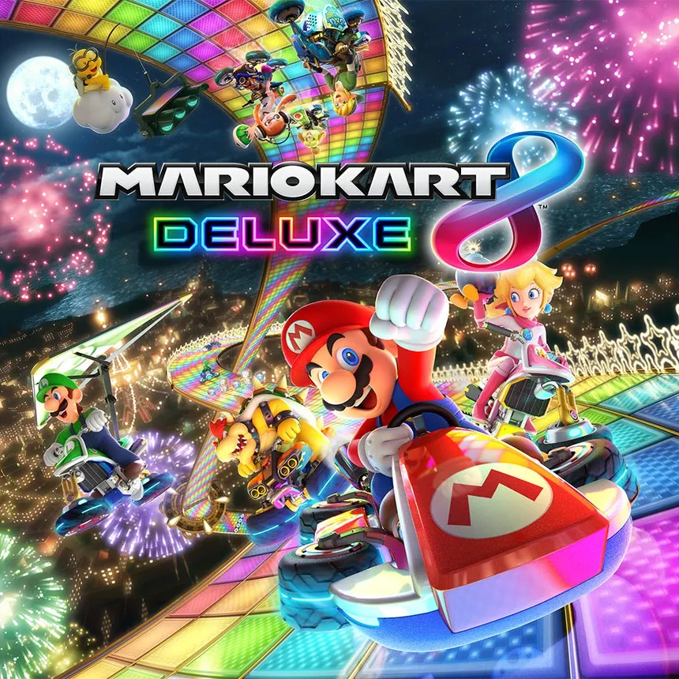

Mario Kart is a fun series of races and battles. You can use power-ups and sabotage opponents with them. You can choose your characters who ride the karts.
It started in 1992 with Super Mario Kart. The latest one is Mario Kart World. Mario Kart was created by Nintendo. It first appeared on the Wii U. In 2017, they launched Mario Kart 8 Deluxe on the Nintendo Switch. Mario Kart World is on the Nintendo Switch 2.

It was a BIG(Like Really Big) hit because of the characters like Mario, Peach, Toad, and etc. It is also a new chaotic multiplayer racing game anybody can play. The controls are also very simple. It's also a 3D game, with antigravity and open-world concepts.
The Blue Shell (The super annoying spiky shell which kind of looks like sonic rolled up) was originally created in Mario Kart 64 not just to punish the player in first place, but as a clever trick to solve Nintendo 64 hardware limitations.
